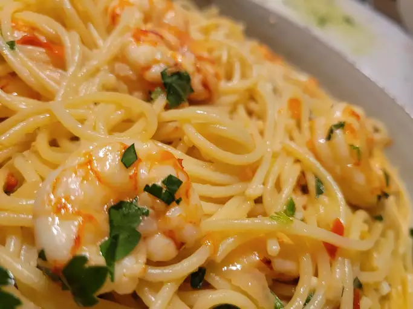

Shrimp Scampi
Shrimp scampi is a seafood dish made of shrimp cooked in a butter, garlic, and white wine sauce. You can serve shrimp scampi by itself as an appetizer or over pasta as a main dish.

Ingredients
- Pasta
- Butter
- EV Olive Oil
- Shallots and Garlic
- White Wine
- Lemon Juice
- Seasonings
- Parsley